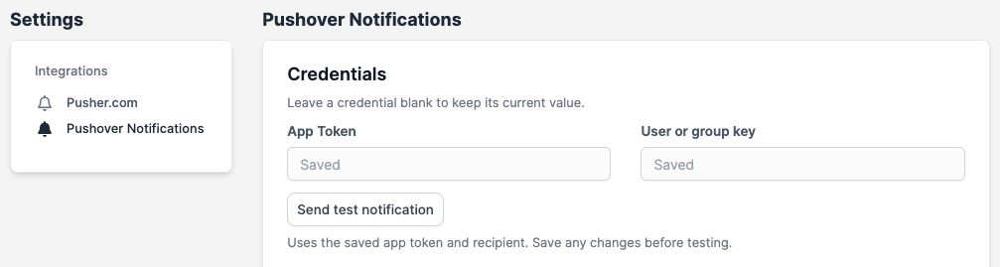
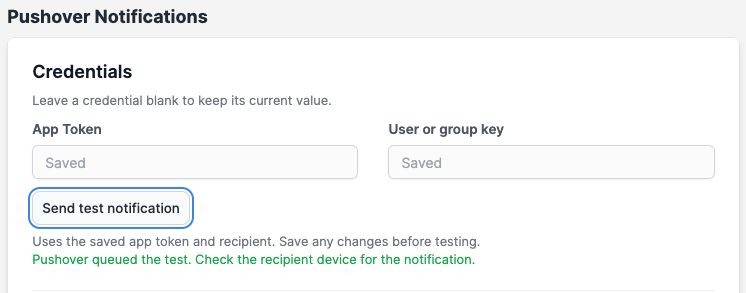
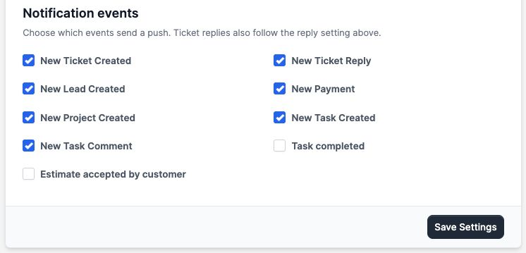

Install or update
Requires a self-hosted installation of Perfex CRM Classic (CodeIgniter) 3.4.1 or later,
PHP 8.1 or later with cURL and mbstring, and administrator access. The server needs a working certificate
store and HTTPS access to api.pushover.net.
- Extract the CodeCanyon download and locate the inner
pushover.zip. - For a first install, open Setup → Modules, upload
pushover.zipand activate Pushover. - To update an earlier CodeCanyon release, back up the database and
modules/pushover. Upload the inner ZIP through Setup → Modules or replace the module files. Run the module database upgrade when Perfex offers it. The upgrade preserves saved settings.
Earlier releases recorded the recipient key in the Activity Log. The 1.0.7 upgrade redacts keys in entries that use the original English format. Check older backups, exports and customised log messages separately. If a key was exposed, replace it in Pushover and save the new key in Perfex.
Connect Pushover
- Register an application in Pushover and copy its API token. You can set a notification icon when editing the Pushover application. Register a Pushover application.
- Copy your Pushover user key or create a delivery group and copy its group key. Everyone in a group can see alert previews, so include only people authorised to receive them. Create a delivery group.
- In Perfex, open Setup → Settings → Integrations → Pushover Notifications. Enter both credentials and select Save Settings.
- For later changes, leave a saved credential field blank to keep its value. If the form reports an invalid credential, correct it and save again.


Send a test notification
- Save both credentials, then select Send test notification. The test uses the saved recipient at normal priority.
- When Perfex reports that Pushover queued the message, check a device registered to that recipient.
- To check a routine alert and its link, create a test lead or submit a web-to-lead form. Open the notification and sign in to Perfex to view the lead.


Choose notification events
Under Notification events, switch alerts on or off individually, then save. The seven existing alert types start enabled. Task completed and Estimate accepted by customer start off. The test button works with all events switched off.
Under Ticket replies, choose client replies only, staff and client replies, or none. Enable New Ticket Reply under Notification events for the reply preference to take effect. Under Notification defaults, choose a priority and sound for routine alerts.


Troubleshooting and support
- If the test is rejected, check the saved token and recipient key and confirm the recipient has an active Pushover device.
- If Perfex cannot connect, check the server’s outbound HTTPS connection, certificate store and PHP cURL extension.
- If an individual CRM alert fails, check its event switch and Utilities → Activity Log.
- Pushover shares its free monthly allowance across each account’s apps. Standard accounts get 10,000 messages per month and Teams get 25,000. Each recipient in a group uses one message. Pushover message limits.
For module support, sign in with the CodeCanyon account used to buy the module and select Contact Author. Share your Perfex and module versions, the alert affected and the test result. Keep credentials private. Pushover module support.
Changes in 1.0.7
- Fixed web-to-lead alerts, client-only ticket replies, task and comment handling, and alerts for projects without descriptions.
- Moved settings into the native Perfex Classic integration layout, masked saved credentials and validated the entire submission before saving.
- Added switches for every alert, with opt-in alerts for task completion and customer estimate acceptance.
- Added the test notification, verified HTTPS delivery requests and redacted historical keys during upgrades.